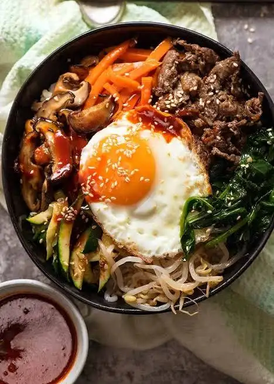

Home
Malaysian Food
This page(Korean Food)
French Food
Thai Food
Algerian Food
About Us
Korean Food/한국 음식
Bibimbap(비빔밥)

Penerangan: Nasi putih yang dihidangkan bersama pelbagai sayur-sayuran, daging, telur goreng, dan sos gochujang (pes cili Korea). Fakta: Nama bibimbap bermaksud “nasi campur.” Setiap bahan melambangkan warna dan unsur alam mengikut falsafah Korea.